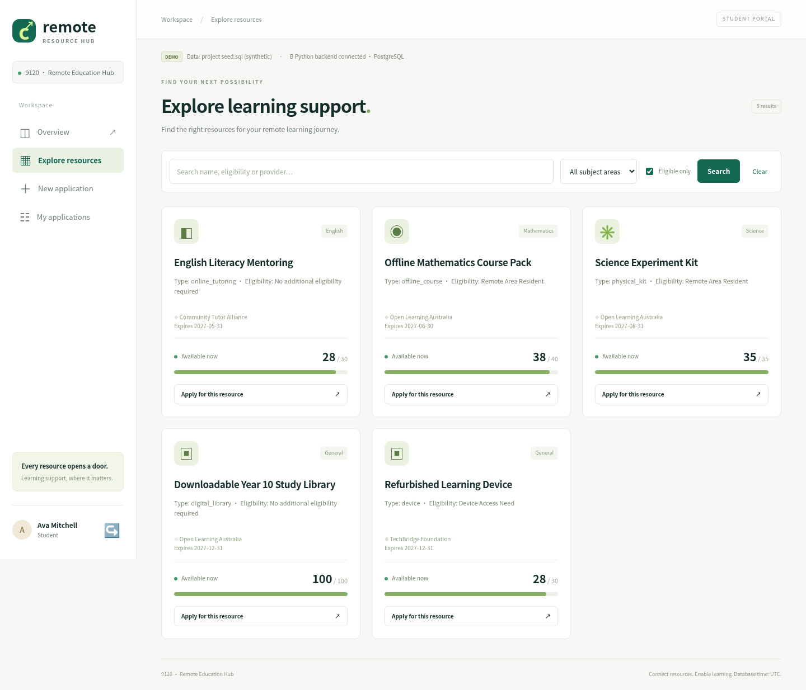
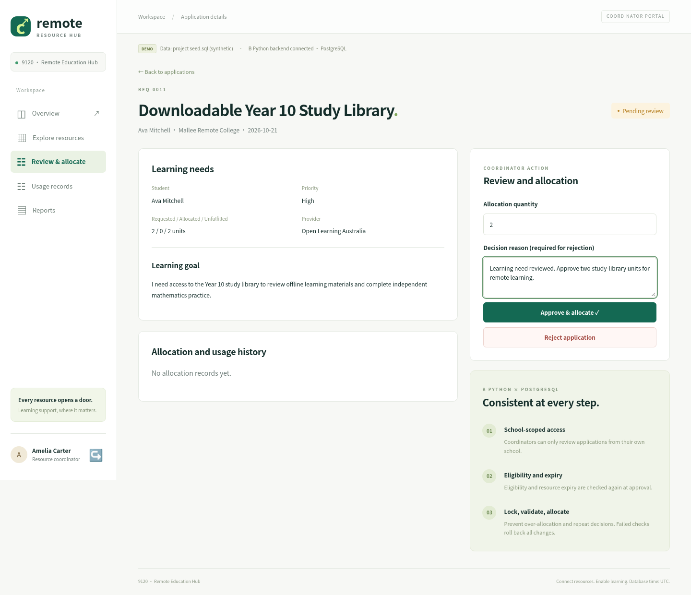

Distance should not
decide access.
Remote Education Resource Support System
A connected workflow for student needs, school review and accountable resource allocation.
01 / THE CHALLENGE
Support is fragmented.
Remote learners face uneven device and internet access. Schools need a consistent way to connect needs, verified eligibility and available resources.
02 / OUR RESPONSE
One traceable journey.
A Flask interface connects the team's Python services to PostgreSQL: discover support, submit a learning goal, review, allocate, record usage and report.
03 / DATABASE VALUE
Consistency at the core.
Foreign keys, checks, unique constraints and transactional row locks protect relationships and prevent duplicate or excessive allocations.
From need to measurable support
A REAL DATABASE WORKFLOWresources
learning goal
review
atomically
and report

Verified eligibility, expiry and remaining quantity guide discovery. A pending application does not reserve capacity.

Only the student's school coordinator can review. Approval and allocation commit together, or both roll back.
IMPLEMENTED ARCHITECTURE
Student, coordinator, usage
and report pages
submit_application
approve_and_allocate
14 related tables · 2 views
Eligibility + capacity checks
Key relationships: Region → School → Student → Application → Allocation → Usage record. Eligibility and funding use many-to-many relationships; provider and funder are overlapping organisation subtypes.
VERIFIED, NOT JUST WIREFRAMED
passing integration checks
against real PostgreSQL
- Application → approval → allocation → usage → CSV
- Capacity, expiry and eligibility failures roll back
- Cross-school access and repeat approvals blocked
- Concurrent requests cannot take the same last unit
- Desktop workflow + 390 px mobile layout verified
PROJECT SEED DATA
Designed for a demonstrable system.
Scope: synthetic seed data and a password-protected demo account. Production identity integration is future work. Initial partial allocation is supported; post-approval top-ups and automatic stock return are not exposed by the supplied backend.
Deliverables: runnable source, SQL, integration evidence, one-page poster, captioned walkthrough and a live-demo runbook.